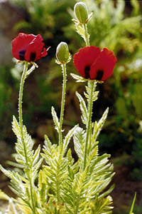
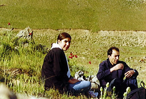
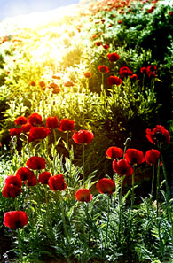
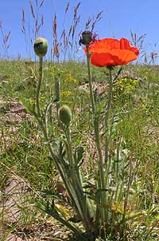
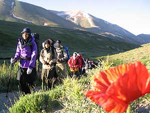
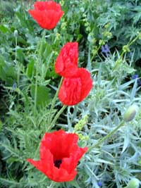

Copyright © Ali Parsa 1998-2011
All rights reserved
شقایق های ایران
Poppies of Iran
Mt. Damavand Mount Damavand is Iran's highest peak. It is a majestic volcano near Tehran. On the slopes around this mountain there grows a special species of poppy called the Scarlet Poppy (Papaver bracteatum). These are pictures of this beautiful wild flower from a short trip there with Saman, my daughter, in June 1999.    | Mt. Sahand -- Pictures by Arash Gholizadeh Sahand is the second highest peak in the province of Azarbaijan, Iran. Another species of poppy (Papaver orientale) grows at the foot of this mountain. The pictures are from a hiking trip there with some students of my alma mater in the summer of 2004.    |

Copyright © Ali Parsa 1998-2011
All rights reserved